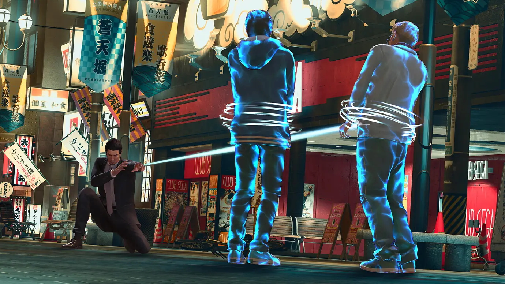

Xbox Game Pass new addition asks: What if Superman and James Bond had a baby?
He’s just a good old gregarious geezer gallivanting around with gadgets.

Warning: Spoilers for the Yakuza/Like A Dragon series may lie ahead.
We need to talk about your dad.
Have you seen what he’s up to lately? Roaming the streets of Sotenbori, dressed like he’s going to a funeral. Beating up goons with help from his magic string, exploding cigarettes and rocket shoes. He won’t take off those sunglasses either, and keeps telling people his name’s Joryu.
‘Joryu what?’ I asked him.
He didn’t answer.
Yes, despite his best efforts to remain anonymous, Like A Dragon Gaiden: The Man Who Erased His Name - which rocks up on Xbox Game Pass today - sees Yakuza protagonist Kazuma Kiryu return to his street-punk-battering best.
Having faked his death at the end of Yakuza 6, the Dragon of Dojima now finds himself a nameless agent of the mysterious Daidoji Faction, the party responsible for helping him attempt to escape his living nightmare by disappearing from public consciousness. Sadly, in his new life, things for Big Kaz remain a lot like they always have been; bad folks are in need of beating up, Machivellian schemes abound at every turn and, most importantly, people he loves are still being threatened.
So, the Tojo Clan’s Superman sets about doing what he always has, using his fists and wits to wade through the murky river of underworld life. At least this time he’s got a brand new fighting style and some interesting new gear to mix things up a bit. While you can happily blast through the old school beat-em-up battles that punctuate Like A Dragon Gaiden’s well-written - but atypically short - storyline using Kiryu’s classic dragon move-set, you’ll need to try out being an agent to get the most out of things.
As it turns out, adding a bunch of clever gadgets to the bottom-kicking abilities of an uber-tough costumed crime fighter makes for a pretty good time. Especially when said gadgets have all come straight out of the big box of bizarrely useful spy gear Q dips into every time James Bond is in need of a retractable pen that somehow ignites the underwear of every nearby baddie whenever you click it.
Sure, it’s maybe a bit unfair to soften up punks you’re about to mash into the pavement with heat actions by running them over with your rocket shoes first. Or tying them up using a monowire that functions a bit like one of Spider-Man’s web slings. Or blowing them up with a cigarette bomb. Or commanding an army of drones (seriously, whoever introduced RGG to the concept of drones, I just wanna talk) to fly into them.
But it’s fun.
That’s what Gaiden is for the most part - a concentrated dose of exactly the kind of fun that made the series what it is today. High-intensity drama that knows exactly the buttons to push when it wants to go from light comedy to serious emotion. Endearingly kooky side characters coming out of the woodwork to add a touch of colour to an urban jungle overflowing with regular folks going about their business. The slapping of a goon’s limp body against the window of a mini-mart you’ve just raided for healing drinks and enough bentos to feed a small nation.
Or, if you’re in the mood for side stuff, becoming the world’s foremost large man with a tiny racing car, learning more about pool or darts than you ever thought you would, and - of course - Karaoke are all just present as ever. You might even get a chance to do a duet with some other suit-wearing Yakuza tough guys, because nothing complements a good set of fists like the kind of pipes that could make Simon Cowell’s nipples hard.
Just play the damn thing, and remind yourself exactly why you fell in love with RGG Studio’s wacky masterpieces before you dive in at the deep end of Infinite Wealth when it arrives in January.
You owe your dad and his shenanigans that much, at least.
Like A Dragon Gaiden: The Man Who Erased His Name is available at no extra cost on Xbox Game Pass, now.